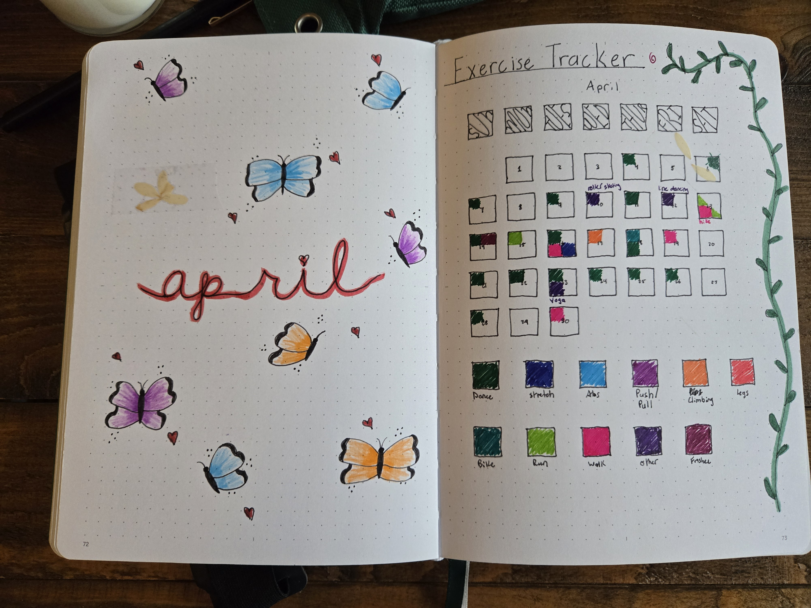
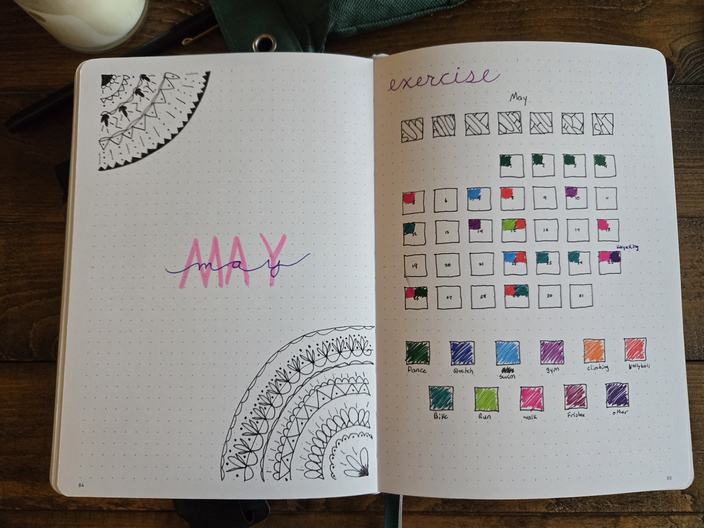
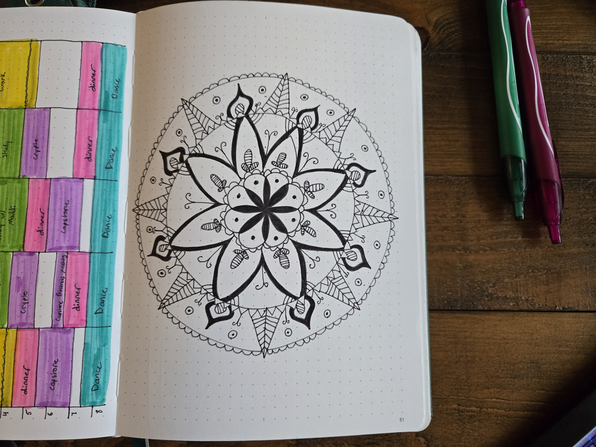
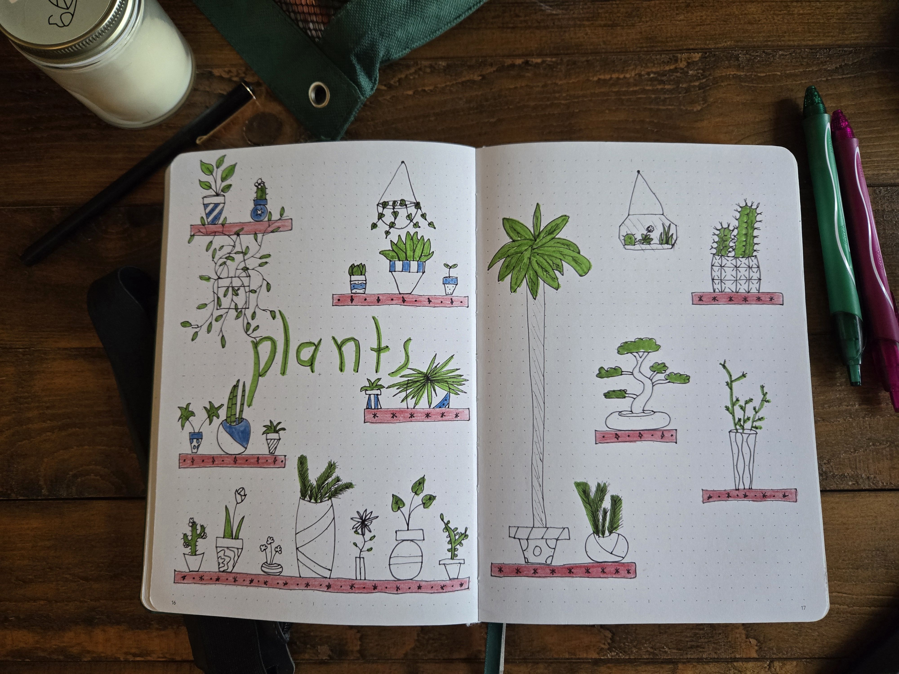
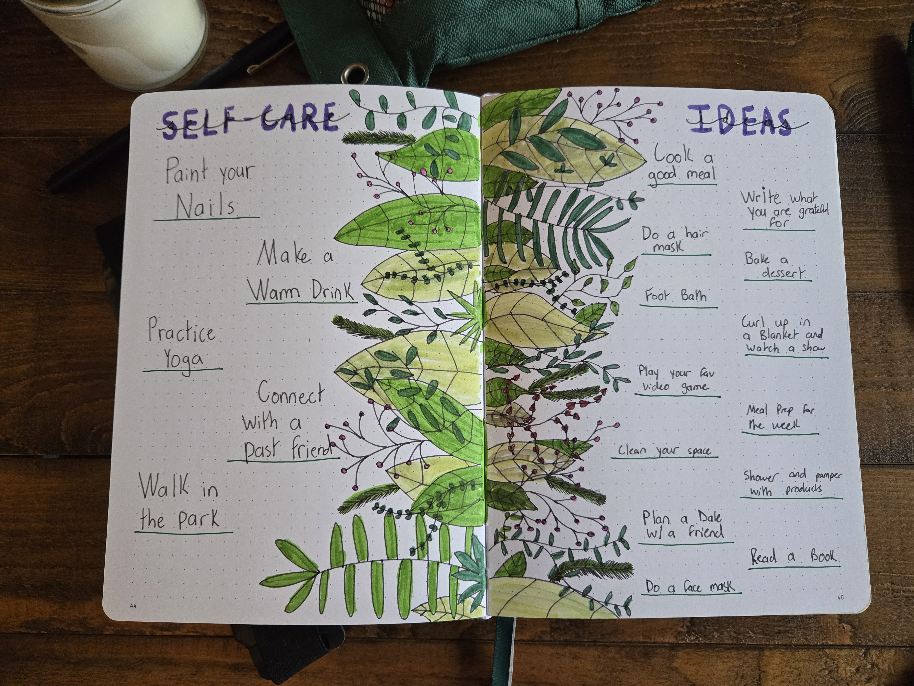
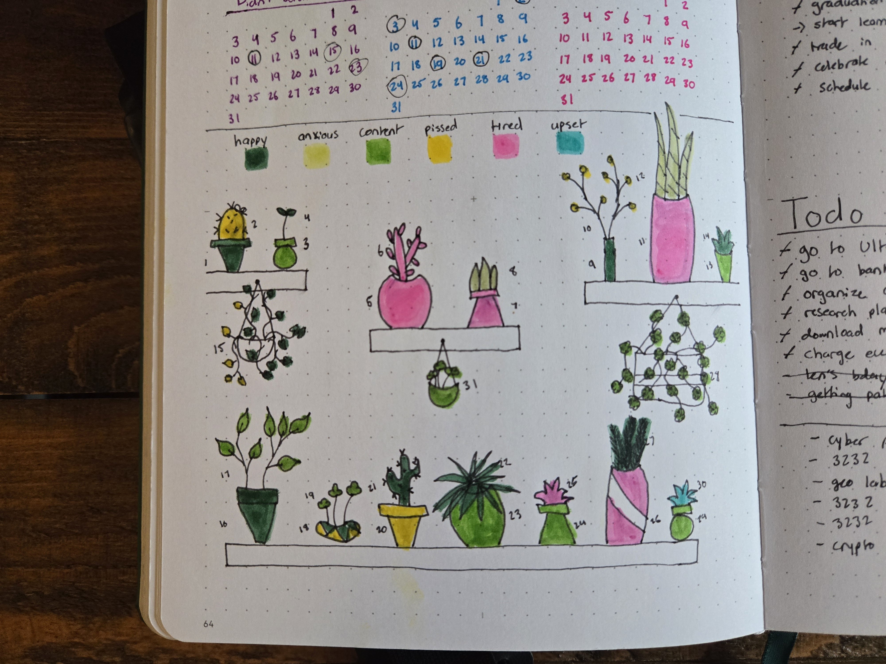
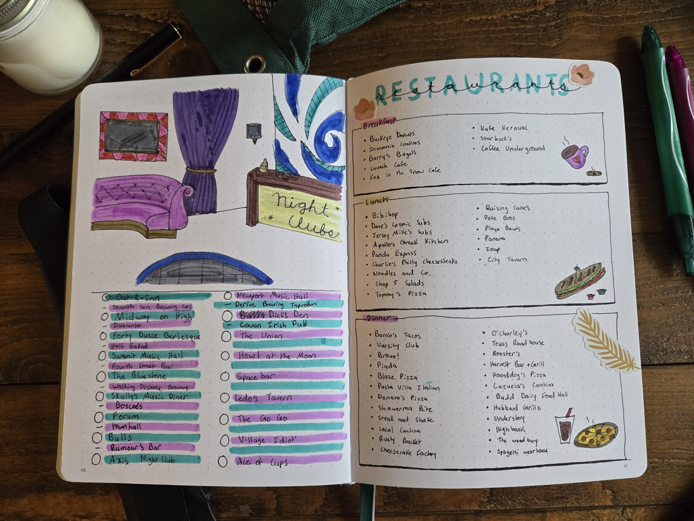
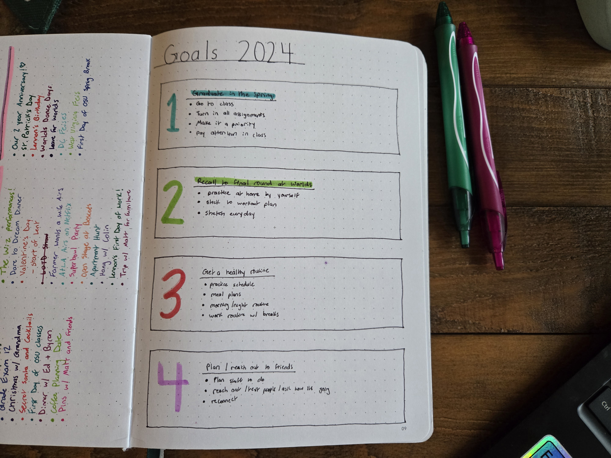

My All Time Favorite Bullet Journal Spreads Part 2
I’m back with more of my favorite spreads from the past year! With the new year fast approaching, I’ve been reflecting on the past year, and part of that reflection has been looking through the pages of my journal. Here are some of my standout pages that I’m especially proud of. I hope they inspire you as you plan for your own journaling in the upcoming year!
Monthly Spreads
I have a few monthly spreads this year that turned out particularly well.
First, there’s April. I absolutely love how the butterflies turned out. I tried using a new medium—colored pencils—and I think the wings came out beautifully! I saw this idea online and thought I’d give it a try for myself.

Another month I really loved was May. This was one of the first times I tried drawing a mandala, and I was so pleased with how it turned out! Mandalas are such a fun and intricate design to create without needing much pre-planning.

This is the very first mandala I ever drew, and I’m still proud of it! I wanted to fill the whole page with it, but in hindsight, I probably wouldn’t do that again. It’s difficult to keep the full circle symmetrical. I’ve found that half or quarter-circle mandalas are much quicker and easier to make, while still being forgiving.

Plants
I absolutely love drawing plants! They always brighten up a page and are surprisingly simple to draw. Plus, I enjoy drawing the plants I actually have in my office—it’s like bringing real-life inspiration into my journal!
This first page is a full two-page plant doodle, complete with pots and shelves. It’s kind of how I imagine my future home looking! Later, I went back and added color to some of the plants, giving me a coloring book-style page to look forward to. I wanted a lot of variety, so I went all out with this one!

This is another page where I really went all out with plants. I had a list of self-care items that I wanted to turn into a special spread. I was searching for inspiration online when I came across this plant seam along the inner part of the page. I loved it and had to try it for myself.

I also love using plants in my habit trackers. This one is a mood tracker, where each part of the plant represents a day of the month. I added a key to show which emotion I felt on each day. The only downside to this tracker is that it’s a bit odd to color in a plant with a weird color to represent a negative mood, but it’s still fun to track. If you choose colors that look good together no matter where you place them, it might work out even better!

Places to Try Lists
I moved to a new city this year, so I spent some time researching restaurants and bars I wanted to try. After compiling my list, I decided to create a fun page to showcase it. I’m especially proud of the bar scene I drew—yes, I went a little over the top with it! I also love the doodles I added to the restaurant list to give the page a little extra flair. This was around the time I had just gotten a new sticker book, so I used those stickers throughout the page too!

New Years Goal Setting
With the new year fast approaching, it’s time to set new goals! For my goal-setting page, I kept the layout simple and clean to keep the focus on the most important part—the goals themselves. I also color-coded the goals to correspond with habit trackers I was setting up for the new year. This way, I can easily visualize which habits will help me achieve my goals.

That’s all I have for now! I hope these pages inspire you as you plan your own journal for the new year. Happy journaling!